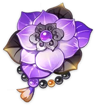

Construção de personagem: Xiao
Construção de personagem: Xiao 
Um Yaksha, um ser imortal que protege Liyue. Também chamado de "Conquistador de Demônios" ou "Guardião Yaksha".
Adepti de Liyue
História do Xiao
História-01
Contra o que exatamente estaria o Xiao lutando? A resposta simples seria “velhas desavenças”, “sonhos não realizados” e mal perdedores…
A verdade completa é que Xiao luta contra os restos dos Archons derrotados na Archon War, que ocorreu antes do surgimento dos Sete Archons. Morax derrotou aqueles Archons e enterrou seus restos abaixo das rochas da terra. Entretanto, archos são imortais. Sua consciência pode diminuir, mas seu poder e ódio irão para sempre permanecer e se espalhar como veneno, trazendo o caos para o mundo e seus habitantes.
Os governantes de Liyue que estão por dentro da verdade sobre Xiao, referem-se a ele como o “Bane of All Evil” (a maldição de todo o mal?). As batalhas que ele luta não podem ser vencidas, e elas nunca acabarão. É uma guerra invisível que ninguém irá testemunhar ou agradecer.
História-02
Xiao não é o verdadeiro nome deste Yasksha, e sim um nome dado a ele para sua próprio proteção.
Há muitos anos atrás, um deus tomou conhecimento da fraqueza de Xiao e forçou ele a servir como fantoche, usando-o para atos cruéis e sangrentos. Muitos morreram nas mãos de Xiao, muitas esperanças foram completamente destruídas e ele até mesmo devorou os sonhos de suas vitimas. Ainda que o doesse bastante fazer isso, ele não tinha como resistir.
Finalmente, no campo de batalha durante a Guerra dos Archons, Morax, o Archon de Geo, teve um encontro destinado com o Metre de Xiao. Rex Lapis venceu o antigo mestre e liberou o Yaksha, dando a ele o nome de “Xiao”.
“Nas gábulas de um outro mundo, o nome Xiao é o nome de um espirito da escuridão que encontrou muito sofrimento e privação. Ele aguentou tudo. Use este nome de agora em diante.”
Yakshas: Os Adepti Vigilantes
Existe um livro, escrito por Masudi, um estudioso de Sumeru. Nele, consta as “Maravilhas Escondidas e o Folcore de Liyue”.
No livro:
Liyue não conheceu nada além da peste na antiguidade.
Os Archons belicistas produziram isto, pois os Archons derrotados ficavam presos sob as rochas e eram pressionados, e os pressionados apodreciam e viravam solo.
Assim, eles retornaram ao ciclo dos Elementos, que abrange tanto o Céu quanto a Terra, e que não conhece fim.
Almas arcanas amarguradas se rebelaram e se tornaram carne mais uma vez, mas sua forma canal era a de demônios. A raiva dos demônios deu origem ao miasma, que por sua vez fez surgir todos os tipos de pragas, demônios e outros males perversos.
Eles mataram a terra de fome e ferveram as águas, e devastaram o povo.
Portanto, diz-se: “O demoníaco é o eco daquilo que foi derrotado no divino.”
“Liyue sofreu muitos surtos de doenças nos tempos antigos. Alguns dizem que isso foi causado pelo caos da guerra implacável entre os Archons. Os derrotados foram esmagados sob as rochas da terra, onde se decompuseram e se transformaram em solo, e finalmente voltaram ao ciclo elementar eterno.
Algumas das almas dos arcontes estavam cheias de amargura por seu destino e se recusaram a sofrer por mais tempo. Sua amargura se materializou e se tornou em monstros malignos. A raiva dos monstros se manifestou na forma de doenças, infestações e todos os tipos de outras ocorrências estranhas.
Os monstros devastaram a terra e a transformaram em um deserto, e desencadearam todo tipo de mal nos rios e mares. Eles infligiram sofrimento indescritível ao povo. Portanto, o que chamamos de monstros são, na verdade, manifestações físicas do ressentimento dos arcontes derrotados na guerra. ”
Rex Lapis convocou Yakshas para purgar os demônios. Animais iluminados de aparência terrível e temperamento guerreiro, e não pouparam brutalidade em seu dever de defender. Dos muitos, cinco eram os mais fortes: Bosacius, Indarias, Bonanus, Menogias e Alatus (Xiao).
Onde quer que a batalha levasse Rex Lapis, eles o seguiriam, até que a praga fosse eliminada. Os cinco são conhecidos pelos mortais como “Os Yakshas”.
“Os Yakshas” foram guardiões de Rex Lapis por anos sem medida, e os males que eles venceram eram incalculáveis. Ainda assim, embora fossem poderosos, devido ao tormento de todos os que enfrentam a guerra, os Yakshas ficaram aflitos.
Alguns foram entregues à sua raiva, outros à loucura que o medo criou. Muitos se voltaram para a matança por conta própria, outros foram enfeitiçados pelas sombras da alma. Depois de um milênio, o destino se apresentou a eles, e foi tal: três dos cinco morreram, o quarto desapareceu e toda a miríade compartilhou o destino dos três ou do quarto. Apenas o quinto prevaleceu, e o quinto foi Alatus.
Alatus é o Golden-Wiged King” (Rei de Asas Douradas) que também é o “Geat Demon Slayer” (Grande Matador de Demônios). Ninguém sabe de onde ele veio, nem para onde foi.
Somente na primavera, durante o oferecimento de lanternas à noite, o povo pode ver o brilho em Guyun e declarar:
“Eis que o Guardião Yaksha acaba com os domínios dos demônios!”
Assim, a tornar-se um ser divino carrega consigo aquela prova final e inquebrável: perder parentes, amigos ou aliados, enfrentar a impossibilidade de redenção, queimar em ira eterna e não conhecer trégua. Tornar-se inimigo de um antigo mal era abandonar a esperança de recompensa e resolução em seus esforços, e seu tormento era o da preta, que não terá saciedade depois de dez mil destinos. “Por isso, diz-se que o custo de ser abençoado com um poder sobrenatural é um destino de adversidade e eventual destruição. Pois o Yaksha perdeu todos os seus amigos, família e aqueles ao lado de quem lutou. Ele acumulou uma dívida cármica incalculável com os atos violentos que ele necessitava, e a conseqüência foi um coração cheio de escuridão e ódio do qual não havia descanso. Não havia recompensa a ser ganha por fazer inimigo de sua própria amargura e ódio dos velhos tempos, nem havia como escapar do sofrimento insuportável. O tormento corroeu seu coração como um lobo insaciável, e um número infinito de vidas não poderia ter feito nada para reduzi-lo."
Principais armas
As principais armas são as 5 estrelas sendo:


Caso não tenha armas 5 estrelas é possível usar as lanças:


Em ÚLTIMA opção é possivel usar a borla branca, mas é recomendado trocar assim que possível

Principais artefatos
O melhor artefato para o Xiao é:

Caso não tenha, outra possibilidade seria usar 2 sombra verde com 2 artefatos que tenham % de atq como atributo, como exemplo o Ultimo Juramento:


Estatísticas primárias recomendadas
Areias: ATQ%
Cálice: Bônus de Dano Anemo
Coroa: Taxa Crítica/Dano Crítico
Prioridade de subestatísticas
- Taxa Crítica
- Dano Crítico
- ATQ%
- Recarga de Energia
Talentos
NA:Ataque normal > Q:Ult > E:Habilidade
Melhores equipes Xiao
| Main |
Buffer |
Healer |
Shield |
| |
 |
|
 |
| Main |
Buffer |
Sub Dps |
Healer |
|
|
 |
|
| Main |
Healer |
Sub Dps |
Shield |
|
|
 |
|
| Main |
Sub Dps |
Healer |
Shield |
|
 |
|
|